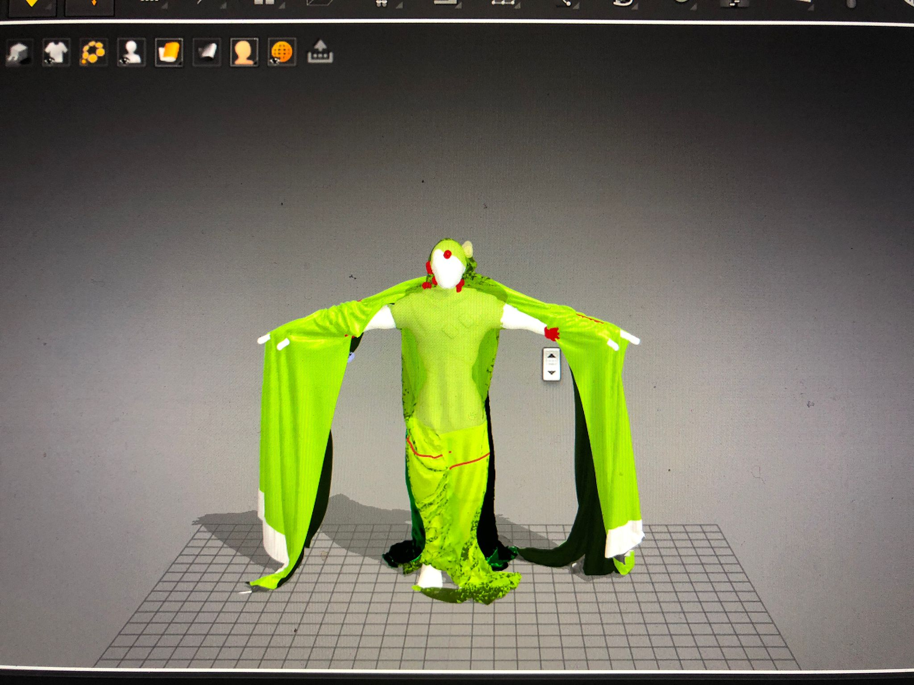
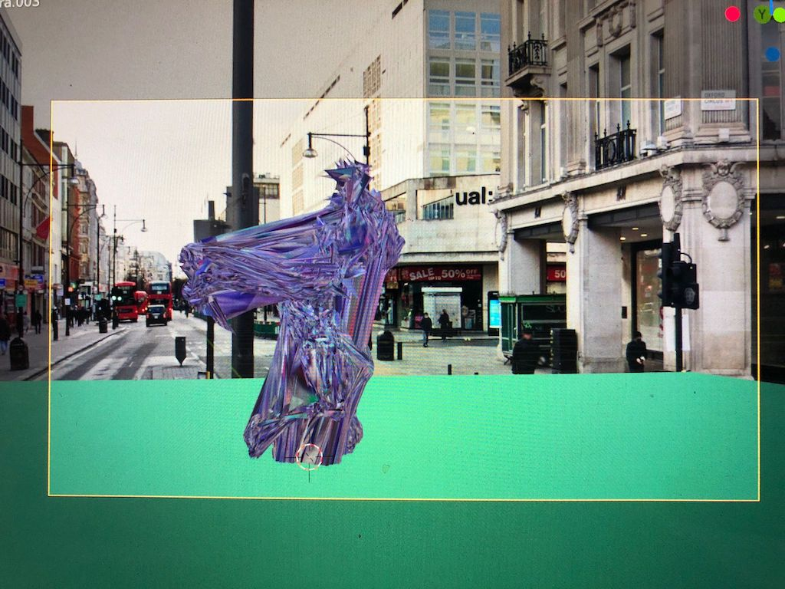

Facing Prudence is an abstract communication of Battaglia's research in an effort to show the entropy of the knowledge of ‘Defuturing’ and the unknowing of system change needed to move the planet out of the Capitalocene epoch.
This was my first time creating a garment in Marvelous Designer. It was a big challenge because Jemma wanted the figure to run in different directions, symbolising the past, present and future.
I used Mixamo, an online tool for loading character animations onto a rigged model.
The most challenging part of this project was combining the Mixamo animations in Blender, I had to copy the animations using the NLA editor but it was very time consuming. In some sections, I ended up using clones of the same model with different animations and cut the scene with different camera angles.
